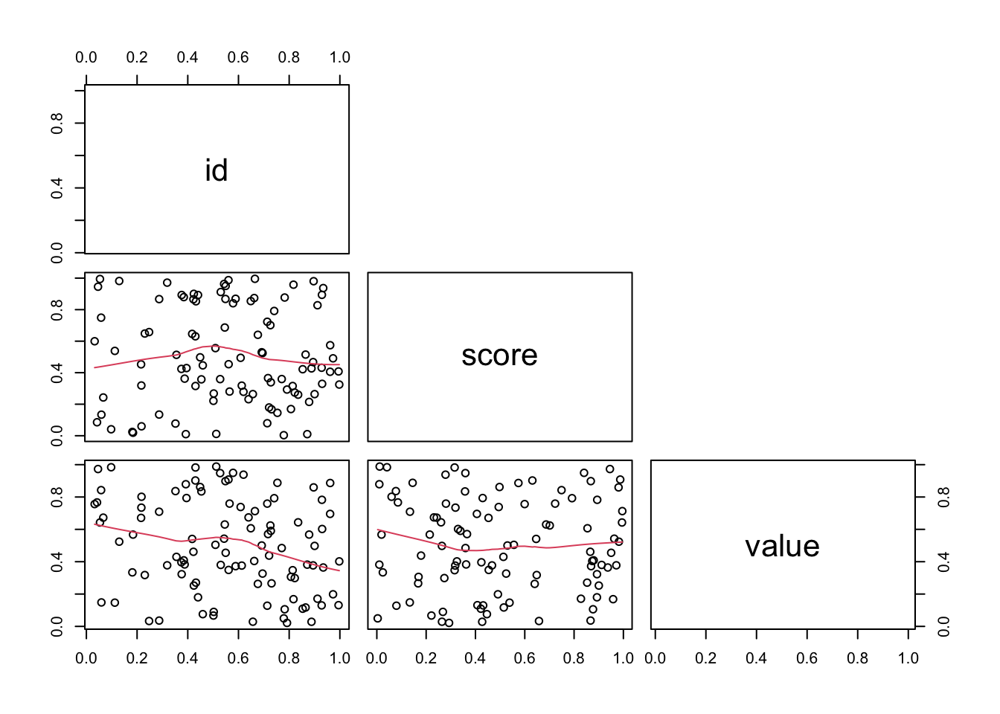

# Vector concatenation and indexing
vec_a <- c(0,1,2,3,4,5)
vec_b <- c(28,3,45,2)
vec_c <- c(0,1)
# Concatenate
fvec <- c(vec_a, vec_b, vec_c, 67, 9)
# Index vector and extract 3rd element (remember that R is 1-based)
fvec[3][1] 2In R, we can have beginner data structures (i.e. vectors, matrices and dataframes) and more advanced structures (i.e. S3, S4 and RC). Simpler data structures can further be subset into homogeneous or heterogeneous data structures. Below we can find a representative diagram of data structure relationships in R.

Atomic vectors and lists are both mono-dimensional data types which differ due to the type of data they can contain, one is formed by elements of the same type, while lists are heterogeneous. Operations based on vectors in R are element-wise, meaning that vector-vector operations are done element by element (with the shorter vector being recycled) while scalar-vector operations broadcast the operation to each single element of a vector. In R, atomic vectors can be created using the vector constructor c().
The important thing about vectors is the fact that they can be indexed to extract specific elements and can be concatenated together.
# Vector concatenation and indexing
vec_a <- c(0,1,2,3,4,5)
vec_b <- c(28,3,45,2)
vec_c <- c(0,1)
# Concatenate
fvec <- c(vec_a, vec_b, vec_c, 67, 9)
# Index vector and extract 3rd element (remember that R is 1-based)
fvec[3][1] 2R is known for being a language with vectorized operations, this is crucial when implementing vector operations since taking advantage of this feature can dramatically speed up code. Some of these functionalities are shown below.
# Vectorized addition with a scalar
fvec + 3 [1] 3 4 5 6 7 8 31 6 48 5 3 4 70 12# Vector-vector addition
fvec + c(rep(2,length(fvec))) [1] 2 3 4 5 6 7 30 5 47 4 2 3 69 11# Vector-vector multiplication
fvec * c(rep(2,length(fvec))) [1] 0 2 4 6 8 10 56 6 90 4 0 2 134 18Of course when adding together vectors we need to make sure that the elements of the addition are of the same length. But what about the underlying vector representation in R? We can access this information by using the utility function str and access an object’s attributes.
# In R, we can function the structure function to check for the structure of the data
# This coerces the integer
v <- c('q', 1, 'a', 2)
# Look at structure
str(v) chr [1:4] "q" "1" "a" "2"# Additionally, we can set attributes to values for variables
'a_name' <- attr(v, 'my_attribute')Another functionally important aspect is to remind ourselves of the existance of approximations in calculations, in this case if we type the following:
x <- (sqrt(2))**2
x - 2 # Should return 0 but it does not[1] 4.440892e-16This happens due to the approximation that the machine provides, and this is why we need to pay a great deal of attention when using conditionals with == 0. This is partially rescued by the use of a function like the one dplyr::near().
Hand in hand with this concept is the one of coercion, by which object get converted from their original class to other classes. This in R happens either implicitly or explicitly.
Creating sequences of numbers in R is fairly straightforward with many different functions available and we can generate both random sequences, repeated sequences or specific distributions (normal, poisson or others) by specifying the needed parameters.
# Genrate 100 random doubles from 0 to 10
dbls <- runif(100, min=0, max=10)
# Sample 100 values from a standard normal distribution
dbls <- rnorm(100, mean=0, sd=1)
# Generate 100 random outcomes from a coin flip using a Bernoullu trial
dbls <- rbinom(100, size=1, prob=0.5)
# Sample 100 values from a negative binomial distribution with size and prob values
dbls <- rnbinom(100, size=1, prob=0.75)Two-dimensional data in R is represented by the Matrix class and can be constructed using the following code.
# Create a matrix
mat <- matrix(runif(60), ncol=3)
# Assign different dimensions
dim(mat) <- c(3,20) # 3 rows 20 cols
# Isolate the upper triangle of the matrix in index form
idxs <- upper.tri(mat, diag = FALSE)Matrices can be also manipulated to get their diagonal and triangles by using dedicated functions.
# Generate a matrix
m <- matrix(runif(10), ncol = 5)
# Diagonal
diag(m)[1] 0.7978122 0.1225899# Upper triangle
upper.tri(m, diag = TRUE) [,1] [,2] [,3] [,4] [,5]
[1,] TRUE TRUE TRUE TRUE TRUE
[2,] FALSE TRUE TRUE TRUE TRUEAdditionally, we can exploit functions which combine vectors to generate matrices.
x <- c(0,2,4,5)
y <- c(2,5,6,4)
# bind vector into matrix as rows
rbind(x, y) [,1] [,2] [,3] [,4]
x 0 2 4 5
y 2 5 6 4# bind as columnn
cbind(x, y) x y
[1,] 0 2
[2,] 2 5
[3,] 4 6
[4,] 5 4In R, matrix-matrix operations are run element-wise, so they have to happen between uniform and consistent, meaning of the same dimensions. Expanding on operations, matrix multiplication in R is achieved with the operator %*% as such:

# Create matrices
x <- matrix(runif(10), ncol = 5)
y <- matrix(runif(5), nrow = 5)
# rows by col matrix multiplication
matmul <- x %*% y
matmul [,1]
[1,] 0.5290985
[2,] 1.2237650Lists are probably the most programmatically complex objects in R, they contain different types and have different lenght with or without named elements. They represent the very first interface to Object-oriented programming. Lists are tricky to work with when mixing data types since they can include silent coercion.
Here we are moving from basic structures to objects which can contain data and are associated to methods which are able to operate on the data itself. It is a mode of operation borrowed from C++. A class contains methods and attributes, the whole creates one of the main instances of OOP. Class elements can inherit from other objects which share the same parent. The main thing to understand is that R, by default, treats everything as an object. Everything, literally everything, has attributes and maybe even methods, from basic vectors to complex classes.
vec <- c(1,2,3)
# Illustrate classes
class(vec)[1] "numeric"# Coerce vector to another class as well, so that methods designed with that class im mind, can be applied to this object as well
class(vec) <- append(class(vec), 'SPC')
# Now vec will have both classes listed
class(vec)[1] "numeric" "SPC" The way we can think of classes in R is that they are description of things in a specific methods system and are defined by the setClass() function in the methods package (in S4). An object is an instance of a class, these can be created using the new() function. Finally a method is a function operating only on a certain class of objects, in this sense a generic function is one which dispatches methods, this means that they do not perform any computation, they just figure out the class of the data and matches it with an appropriate method. Generics can of course be created and a developer might create associated methods. For S3 system objects there is also a methods function which lets the user explore methods implemented for the function.
By default, R has three object oriented systems, one is S3, it implements classes without defining them strictly but instead defines functions and methods separately across classes. The main functional aspect related to S3 is the ability to overload functions, this means that one function can be swiftly applied to different class elements and behave correctly. S3 functions are by design split into generics and methods and are defined in the code by using generic.class.
# Example of an S3 defined (generic) function is print
printfunction (x, ...)
UseMethod("print")
<bytecode: 0x7f84e84187b0>
<environment: namespace:base># Call methods function on a generic function, in this case mean
methods('mean')[1] mean.Date mean.default mean.difftime mean.POSIXct mean.POSIXlt
[6] mean.quosure*
see '?methods' for accessing help and source codeS3 pre-dates S4 both in terms of time and functionality, S3 methods system is less rigorous and informal, this called for a more formalized approach tackled by S4.
We can explicitly access the code behind an S3 method definition by doing the following:
head(getS3method('mean', 'default'))
1 function (x, trim = 0, na.rm = FALSE, ...)
2 {
3 if (!is.numeric(x) && !is.complex(x) && !is.logical(x)) {
4 warning("argument is not numeric or logical: returning NA")
5 return(NA_real_)
6 } tail(getS3method('mean', 'default'))
19 lo <- floor(n * trim) + 1
20 hi <- n + 1 - lo
21 x <- sort.int(x, partial = unique(c(lo, hi)))[lo:hi]
22 }
23 .Internal(mean(x))
24 } This shows the inner functionality of the S3 method behind mean. Interestingly, the .Internal at the very end is used to fetch C code which adds functionality to the method.
S4 formally defines classes, while RC (reference class) binds also the methods and has a very similar approach to classes in C++. In the below code we can see how, differently from S3, an S4 method does not have ellipses in the standardGeneric function since it takes on standardized input invariably.
# Print out an S4 function
showstandardGeneric for "show" defined from package "methods"
function (object)
standardGeneric("show")
<bytecode: 0x7f84ea9c48c0>
<environment: 0x7f84ea209270>
Methods may be defined for arguments: object
Use showMethods("show") for currently available ones.
(This generic function excludes non-simple inheritance; see ?setIs)Classes in R can be defined using the structure() function by doing something like foo <- structure(list(), class = 'my_class') and then from there we can start building methods for the class by specifying functions operating on the structure. A hierarchy of sorts can be visualized as follows, first we have a class, then in S3 methods are below functions, which in turn are separated from the class specification (like class and attributes in python). RC style objects are the ones closer to the object-oriented programming way of C++, here methods and attributes are packaged within the class.
Now, as an example, we will define a simple S4 class for describing a bank account.
# Define the S4 class with slots
setClass('bank_account',
representation('user' = 'character',
'balance' = 'numeric'))In this way, we are able to access the slots of the class with the @ operator, which is specifically reserved to access S4 class slots. Let’s now create a new method which allows the updating of the class object after a money deposit.
# A method to update a class
setGeneric('sum')[1] "sum"setMethod('sum', # specify a generic function
'bank_account', # signature
function(x, deposit) {
x@balance <- x@balance + deposit
})
# If we call methods on print we should see the new method as well
showMethods('sum')Function: sum (package base)
x="bank_account"Now let’s try the new class in action and apply the defined method to an object!
# Create a new bank account with user and balance
ba <- new('bank_account', user = 'Mattia', balance = 100)
# Add a deposit (if this was a Ref Class then updates could happen inplace)
ba@balance <- sum(ba, 200)
# Print out new value
ba@balance[1] 300In R, we are able to work with files by interacting with the host OS and filesystem in I/O workflows and pipelines. The function read.table() is a built-in which helps the user to read files. In addition, by using write.table() we can save a table object with a specified name and separator. R also provides a specific function to dump() a whole environment image into a variable which can be save, although this is highly inefficient.
Additionally the tidyverse, through readr, provides a faster interface to achieve the same I/O management.
An interesting binary file format to save objects in R but which can be read by any other programming languages is the one provided by the feather library.
Base R functions for manipulating basic data structures are many. One of the most potent family of functions in R is the *apply one. In this case we can iterate over elements of a list or columns of a dataframe iteratively by applying a custom function without the need to declare it explicitly outside.
# Use apply over a list
l = list( 1:5
, c("a","b")
, c(T,F,T,T) )
# apply length to the list elements
lapply(l, length)[[1]]
[1] 5
[[2]]
[1] 2
[[3]]
[1] 4Then we can operate over dataframe numerical columns extracting correlation values like the following, using the function pairs().
## quick graphical overview by the scatterplot matrix
d <- data.frame('id'=runif(100), 'score'=runif(100), 'value'=runif(100))
pairs(d[,c("id", "score","value")]
, lower.panel = panel.smooth
, upper.panel = NULL)
Operations on numerical 2D data like matrices can be operated upon by using a couple of very powerful functions like scale() and sweep().
# Showcase the functions above
m = matrix(round(runif(9),2),nr=3,nc=3)
# Scale (mean 0 and variance 1)
scale(m, center = TRUE, scale = TRUE) [,1] [,2] [,3]
[1,] -0.7007779 0.1469437 -0.4639670
[2,] 1.1451737 -1.0653416 -0.6837408
[3,] -0.4443958 0.9183979 1.1477078
attr(,"scaled:center")
[1] 0.2366667 0.6866667 0.2733333
attr(,"scaled:scale")
[1] 0.19502137 0.09073772 0.13650397# Sweep (apply a vector over a matrix summarizing an operation)
# median value of each row of the matix
row.med <- apply(m, MARGIN = 1, FUN = median)
# subtracting the median value of each row
sweep(m, MARGIN = 1, STATS = row.med, FUN = "-") [,1] [,2] [,3]
[1,] -0.11 0.49 0.00
[2,] 0.00 0.13 -0.28
[3,] -0.28 0.34 0.00Of course the functionality of many of these functions has been superseded and augmented by the ones provided by the dplyr package, at least in terms of operating over dataframes.
Functions in R map a repetitive behaviour onto an input and generate a return value. In R, .Primitive is used to call a function from the underlying C language, an example of this is sum(), as seen below.
sumfunction (..., na.rm = FALSE) .Primitive("sum")In functions, scoping refers to how a value is assigned to an environment variable, this will test whether the variable already exists or not and whether the variable exists in a parent or child environment. More specifically, coping is the set of rules that control the way R picks up the value of a variable Scoping is divided in both static and dynamic. In static scoping we can have four basic principles including name masking, by which if a name is not defined inside a function, R will look for it in the parent environment. Functions and variables since the same rules apply if a function is defined within another function. Another feature is dynamic lookup, by which we can have multiple assignments to the same value along the code since static scoping determines where to look for values and not when. This means that R looks for values when a function is run and not when it is created, which in turn means that the output of a function can be different depending on objects outside its environment.
x <- 1
y <- 3
# Demonstrate name masking
fun <- function(){
x * y
}
fun()[1] 3# Demonstrate dynamic look-up
dl <- function(){
x <- x + 1
}
# first value
x <- 0
dl()
# second value
x <- 2
dl()In the case we end up calling a variable inside a function which does not exists, R will throw an error since it cannot find the variable anywhere in the function or in the parent environment. We can check the existance of variables by using exist() while the correct passing of an argument can be checked with the missing() function within an if statement. This can be coupled with a stop() function in order to stop code execution.
# Missing check + Stop check
foo = function(x,y,...){
if (missing(y)){
# STOP
stop("y is not specified, please STOP\n")
}else{
print(x)
print(y)
args = list(...)
if("z" %in% names(args)) print(args$z)
}
}This concept extends to condition handling and recovery with the try() and catch() couple of commands. Additionally, by using tryCatch() we can extend this behaviour further by encapsulating both command, warning and error in the same function which will decide between warning or error and eventually return custom error messages.
# tryCatch demonstration
foo = function(z,
warning = function(w) {
print( paste('warning:',w) );
},
error = function(e) {
print(paste('error:',e));
}
){
tryCatch(
{
print(paste("attempt log operation for z:",z))
return(log(z))
}
,warning = warning
,error = error )
}
# Execution
foo(2)[1] "attempt log operation for z: 2"[1] 0.6931472The functionality of tryCatch() can be coupled with program re-starts in order to be able to run the function again with the substitution of input values gracefully. This is achieved by combining tryCatch(), invokeRestart() and withRestarts(). Sample code for this behaviour is found below.
foo = function(z,
## WARNING FUNCTION with restart
warning = function(w) {
print( paste('warning:',w) );
invokeRestart("correctArgForWarnings")
},
## ERROR FUNCTION with restart
error = function(e) {
print(paste('error:',e));
invokeRestart("correctArgForErrors")
}
){
## Loop is repeated until a break is specified
repeat
## 1. catch errors *********************
withRestarts(
## 2. catch warnings =================
withRestarts(
## TRY CATCH BLOCk -----------------
tryCatch(
{
print(paste("attempt log operation for z:",z))
return(log(z))
} # return break the repeat loop
,warning = warning
,error = error )
##------------------------------------
, correctArgForWarnings = function() {z <<- -z} )
##=================================
, correctArgForErrors = function() {z <<- 1})
##*********************************
}
foo(2)[1] "attempt log operation for z: 2"[1] 0.6931472Now let’s try with an invalid value for a logarithm.
# invokes the warning’s handler
foo(-2)[1] "attempt log operation for z: -2"
[1] "warning: simpleWarning in log(z): NaNs produced\n"
[1] "attempt log operation for z: 2"[1] 0.6931472In R, there are a few functions which help with debugging functions, we can set a debug() function working in order to check the status of a function. Additionally one can use browser() to interrupt execution and check the environment at a specific timepoint or traceback() to print the call stack of the last uncaught error.
rbenchmarkAlso, one can check for function performance and benchmarking with specific libraries in R like rbenchmark::benchmark(). Calling this function, we can manage the avergae execution time and get data from the execution of more than one function altogether.
Optimizing code to make it faster is an iterative process which essentially entails three steps including finding the bottleneck, trying to eliminate it or substitute it and then repeat the process until the code is “fast enough”. These steps are facilitated by profiling the code, some demonstration is present below.
As an example, we can demonstrated the profiling of a recursive function which calculates a factorial value from an integer. This can be implemented in two ways, either by taking advantage of recursion or by exploiting iteration with for loops.
# Recursion vs Iteration
fact.recursive = function(n){
ifelse (n==1, 1, (n * fact.recursive(n-1) ) )
}
fact.it = function(n){
ans = 1
for (ii in 2:n) ans = ans * ii
ans
}The simpler way to obtain a benchmark is to check the elapsed time for the execution of the two functions.
# Recursive
system.time(fact.recursive(100))["elapsed"]elapsed
0.002 And now the iteration-based one.
# Recursive
system.time(fact.recursive(100))["elapsed"]elapsed
0 The main thing is to understand how R handles every calculation, this procedure is known as profiling can be achieved in R by different means and packages. We can demonstrate this by applying this workflow to a linear regression setting while using the package rbenchmark.
library(rbenchmark)
# benchmark() is a simple wrapper around system.time()
benchmark( fact.recursive(15)
, fact.it(15)
, order="relative"
, replications=5000
) test replications elapsed relative user.self sys.self
2 fact.it(15) 5000 0.012 1.00 0.011 0.000
1 fact.recursive(15) 5000 0.147 12.25 0.144 0.003
user.child sys.child
2 0 0
1 0 0Packages in R are installed by using either CRAN or other public package repositories like Bioconductor as we have seen yesterday. R uses both a system-wide access library (admin privileges needed) and a personal library living in the home directory of the user (usually located at /usr/local/bin/R). The tendency is to use only source code within libraries without relaying on third-party code in order to keep everything contained and requiring only compilation of its own source code. RStudio is an IDE completely based and dependant on R which allows developers to start a fresh project from a template directory system. In this case we can set a project name and already select eventually present source files from which to start building. Additionally, all code can be promptly synced with an existing or a new git repository to provide efficient tracking of code changes. The same can be achieved in CLI by running package.skeleton(). Some source of help useful to understand how to build R packages include the official R documentation and Karl Brockman’s Primer (also contains many other interesting tutorials and primers for C++).
In order to automate building effective documentation (which resided in a .Rd file for each function contained in the man directory) and function annotation, which can become a really painful process, we can rely on the Roxygen2 which takes specific annotations in the source code and turns them into function documents respecting the format needed by R. An example of a function with proper Roxygen2 annotations is the following:
# Illustration of Roxygen2 docs
#' A simple and useless function
#'
#' This function is just here to print stuff out and demonstrate the use of \code{roxygen}.
#' Use "@param" to list the paramters of the function with descriptions.
#' Use "@return" to describe the return values of the function.
#' Use "@export" to export the function in namespace or do not use it if the function is supposed to remain of internal use.
#'
#' @param x whatever you want to print out.
#'
#' @return None
#'
#' @export
my_fun <- function(x, ...){
print(x, ...)
}Another important part of R packages is the NAMESPACE, which contains instructions on how to export functions when loading a package. This file will also be generated by Roxygen2 when needed, and the tool will automatically export only the right and needed namespaces (function names).
Another useful feature that a developer can use while creating a package is the insertion of data as well. This data can be used for testing or use as available datasets for showcasing the package functionalities. This can also be really useful in the case of static files which are sourced from functions within the package. This documenting of data can also be handled by Roxygen2 through the creation of another .Rd file. In the data definition we can provide a @docType data and a @usage data to refer to the fact that is data and the way to source it using a function.
# Here's a way to generate some data and store it into a file so that it can be source by a function in the package
# This code should be saved as any other source code, and with the annotations it will generate automatically a .Rd file with documentation
#' Random data loaded inside a package
#'
#' @docType data
#'
#' @usage data(random_matrix)
random_matrix <- matrix(runif(100), ncol=10)The above matrix will then be loaded and included in the worskpace after the package has been loaded and can be called using random_matrix as a variable, the same way that mt_cars is sourced from ggplot’s default datasets.
Static websites are called like so since they are deployd but they cannot interact with users in terms of data flow and server requests. Dynamic sites instead allow interactions by using an infrastructure based on frontend and backend structures. One of the most used wrappers for interactive site building in R is Shiny.
Shiny apps work by separating UI and Server (a live R session) which end up communicating UI requests happening in the frontend to the backend engine. In Shiny, this crosstalk happens via the creation of a Fluid Page, which is a page type that resizes itself while browsing around. In doing this, Shiny defines a layout that can vary based on the size of the page in a reactive way. In practice, this is implemented via two files, a ui.R (user interface) and a server.R (backend).
In order to create a dynamic and interactive page in Shiny we can use Widgets. Once a widget is defined, it needs to know its imputs and outputs as lists, as well as their location in the server side. An important thing is that server-side inputs should be read-only, if inputs are actively modified, then the page will throw an error. There will always a unique correspondance between input and output in Shiny’s reactive programming paradigms since both of them are linked and named across functions.